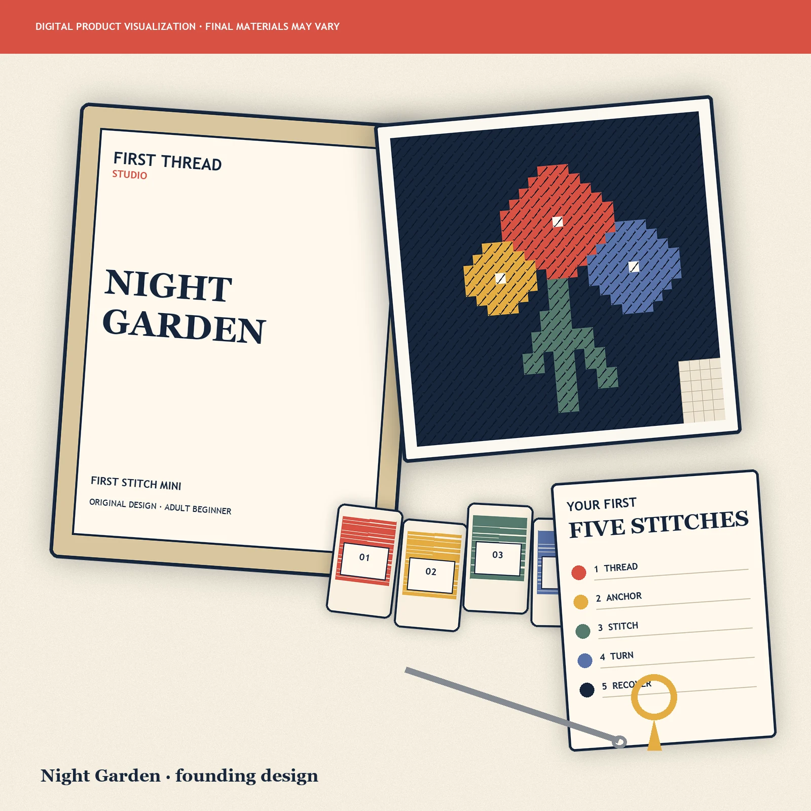
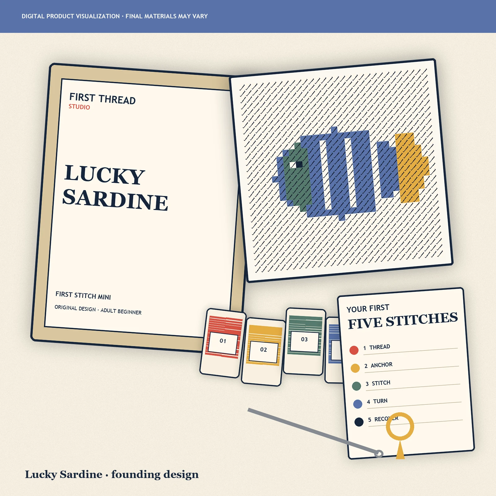
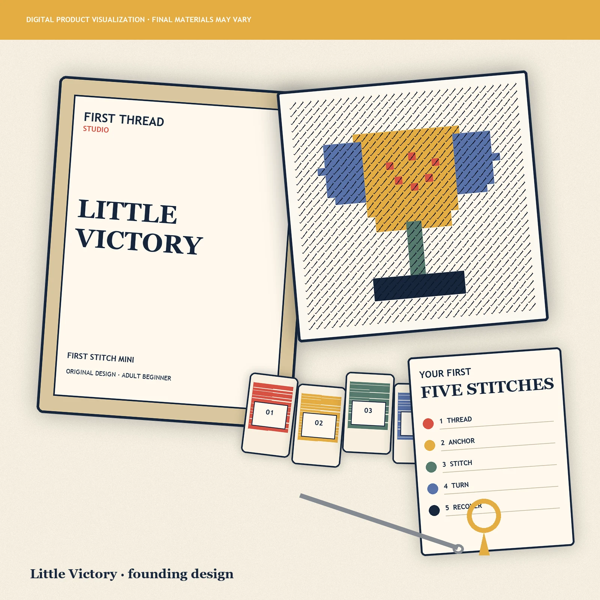
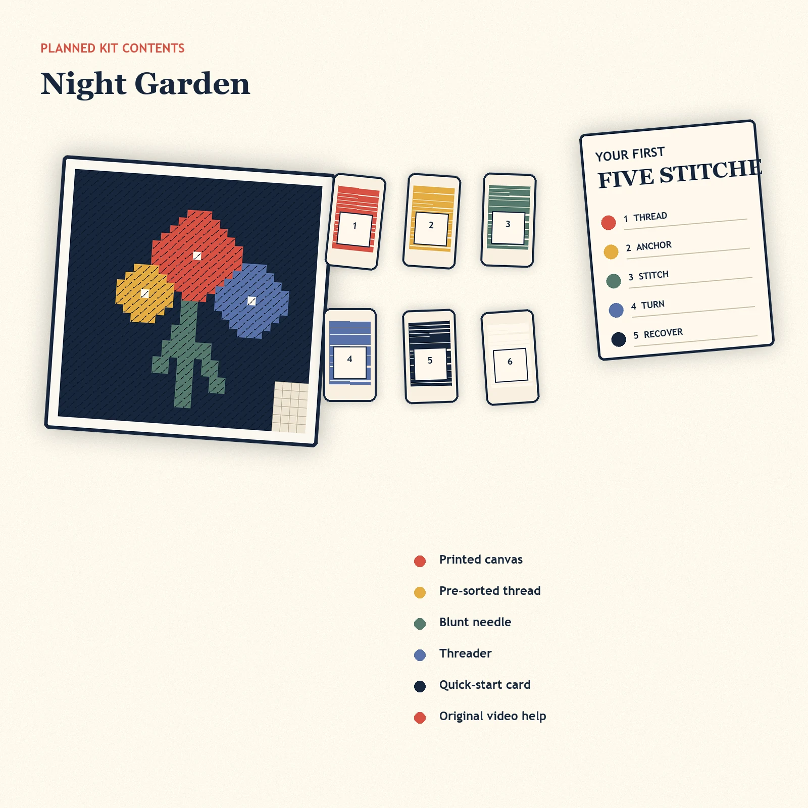

A quiet reset
One small project, one stitch, and an hour that does not ask you to scroll.
Original mini needlepoint · true-beginner path
Small, complete needlepoint projects with the color sorted, the first stitch explained, and calm help when something goes sideways.
Preview only. No order is accepted until the physical sample, novice test, landed cost, and ship date pass.

The founding designs
Three original directions keep the first drop focused. Every design starts small, uses one core stitch, and is intended to finish without an expensive finishing service.
A calm botanical mini designed to turn your first stitch into a finished piece.

Playful giftA bright little fish for the person who needs a portable good-luck project.

Celebration projectA small trophy stitched for promotions, fresh starts, and wins worth keeping.
The beginner-completion system
The exact completion range will be added only after a true novice finishes the production sample without live coaching.
The printed canvas shows where each pre-sorted thread belongs.
A clear card and original video teach the first rows, tension, and how to undo a mistake.
The small format is designed for a patch, tag, ornament, or mini display.
One complete box
The value is not a bag of supplies. It is a deliberately small first project with the materials, sequence, and recovery help organized before it reaches you.

More than supplies
One small project, one stitch, and an hour that does not ask you to scroll.
Two complete kits for a friend night or low-pressure date.
A gift that includes the first step—not just another task to figure out.
Proof before promises
Until real customers exist, we use product facts and transparent launch gates instead of fabricated social proof. The first sale happens only after the physical kit works as described.
Before checkout opens
Questions before the first stitch
That is the design goal. The exact completion range and approved format will be published only after a true novice finishes the production sample without live coaching.
We will not accept payment until the physical sample, novice test, thread quantity, print alignment, landed cost, and fulfillment date are verified.
No. Current images are clearly labeled digital product visualizations. They will be replaced or supplemented with real sample photography before checkout opens.
Yes. The planned kit contains a blunt tapestry needle and is positioned for adult use.